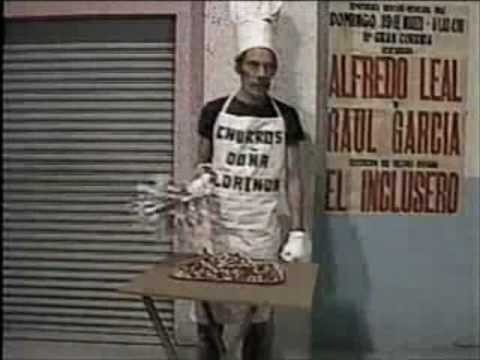
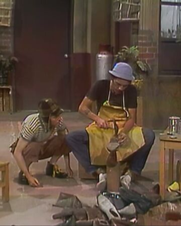

<!DOCTYPE html>
<html lang="en">
<head>
    <meta charset="UTF-8">
    <meta name="viewport" content="width=device-width, initial-scale=1.0">
    <title>El gran Don Ramon</title>
   <style>
    body { background-color: rgb(197, 197, 197); }
    #title {
      text-align:center;}
    .sub-title {
      text-align:center;}
    #img-div {
    text-align:center;}
    .img-caption{
      margin-right: 80px; margin-left: 80px; font-family: 'Segoe UI', Tahoma, Geneva, Verdana, sans-serif;}
    .churrero{
       width:300px; float:left; }
      .zapatero{
        width:200px; float:right;}
      .ropavejero{width:200px; float:left}
      .pie1 .pie2 .pi3{font-family: 'Segoe UI', Tahoma, Geneva, Verdana, sans-serif}
      
  </style>
</head>
<body>
  
</body>
</html>
<main id ="main">
    <br>
    <br>
    <!--Titulo header-->
    <div>
      <h1 id= "title"> Don Ramon </h1>
    </div>
    <!--Sub header-->
    <div class="sub-title">
  <cite>"no hay trabajo malo, lo malo es tener que trabajar..."</cite>
    </div><br><br>
    <!--img.header-->
    <div id="img-div">
     
    </div><br>
    <!--texto bajo foto1-->
    <div class="img-caption">
    <p>Don Ramón es un personaje ficticio de la serie de televisión mexicana El Chavo del Ocho. 
        Es un viudo desempleado que vive junto a su hija, la Chilindrina, en el departamento Nº 72 de la vecindad del Chavo, propiedad del señor Barriga.
         Fue personificado por el actor mexicano Ramón Valdés, quien era además hermano de Germán Valdés "Tin Tan" y Manuel "El Loco" Valdés.
        </p><hr>
      </dic><br><br>
      <div>
        <p class="pie1"><br><br><br>¿Alguien 
      recuerda cómo se las ingeniaba Don Ramón para sobrevivir en la vecindad?
        Todos los días El Señor Barriga iba en busca de la famosa renta, pero el personaje que interpretaba 
        Ramón Valdés nunca tenía dinero para pagarla. ¿Cómo hacía? En verdad, creo que la mayoría de seguidores
         no estaba seguro de cómo conseguía realmente evitar tener que enfrentar sus problemas económicos.</p>
 
    </div><br><br><br><br>
    <dic>
      <p class="pie2"><br><br><br>Sin embargo, si nos ponemos a recordar 
        los capítulos, no se nos puede olvidar de que, efectivamente, Don Ramón sí trabajó y más de una vez. Don Ramón tuvo más de 25
         profesiones que sí ejerció, pero que no logramos comprender a dónde iban a parar los ingresos de dichos trabajos. El destino 
         final del dinero que ganaba por realizarlos es hasta ahora un misterio, no obstante, nadie, absolutamente nadie puede negar
          que Don Ramón trabajó.</p>
    </dic><br><br><br><br>
    <div>
      <p class="pie3"><br><br><br><br>Es cierto, él nunca tuvo un
         trabajo fijo. La verdad es que no tenía la oportunidad de durar mucho, pues siempre tenía que pasar algo o alguien tenía que
          entrometerse para que de alguna manera el triunfo se vea truncado. Como sabemos, estos impases que pasaba el protagonista de 
          este artículo, casi siempre, eran ocasionados por el protagonista principal de la serie el Chavo del Ocho pero obviamente,
           estos no eran adrede. </p>
    </div><br><br><br><br><br>
    <div id="tribute-link">
      <a target="_blank" href="https://es.wikipedia.org/wiki/Ram%C3%B3n_Vald%C3%A9s">CLICK AQUI PARA MAS INFORMACION.</a>
      
    </div><br><br><br><br><br><br><br><br><br>

  </main>